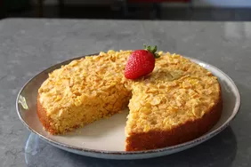

Cornflake Corn Cake

Description
A cornflake corn cake is a delightful treat that brings together the crispy goodness of cornflakes
with the natural sweetness of corn.
This scrumptious combination results in a light and flavorful cake that is sure to please
both kids and adults alike.
Ingredients
- 1 cup cornmeal
- 1 cup all-purpose flour
- 1 cup cornflakes cereal
- 1 teaspoon baking powder
- 1/2 teaspoon baking soda
- 1/2 teaspoon salt
- 1/2 cup granulated sugar
- 1/2 cup unsalted butter, melted
- 1 cup buttermilk
- 2 large eggs
- 1 teaspoon vanilla exctract
Steps
- Preheat the oven
- Combine Dry ingredients
- Prepare Wet Ingredients
- Combine Wet and Dry ingredients
- Add Sweet Corn
- Pour Batter into the Baking dish
- Bake the Corn Cake
- Cool and Serve